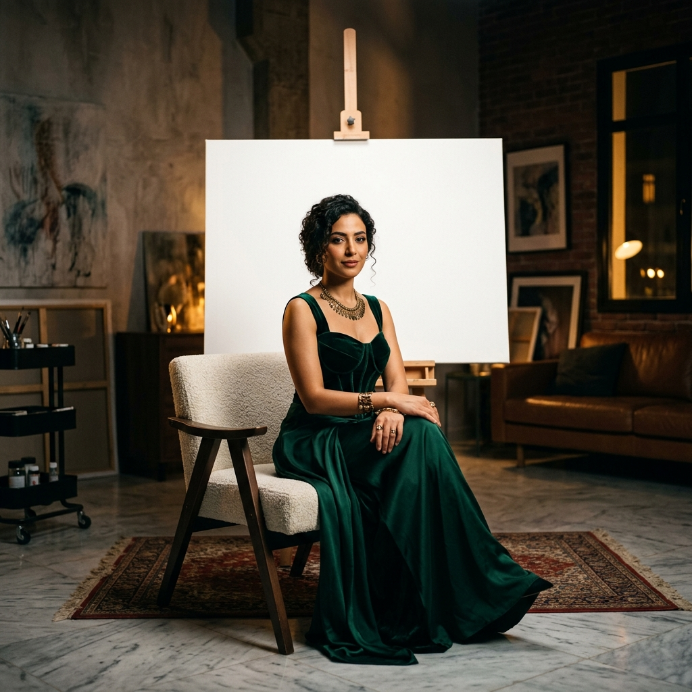
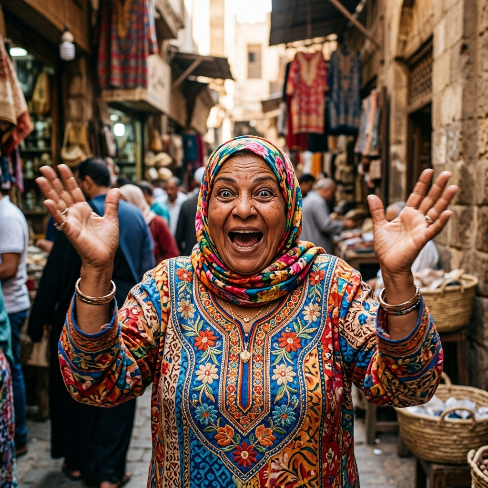
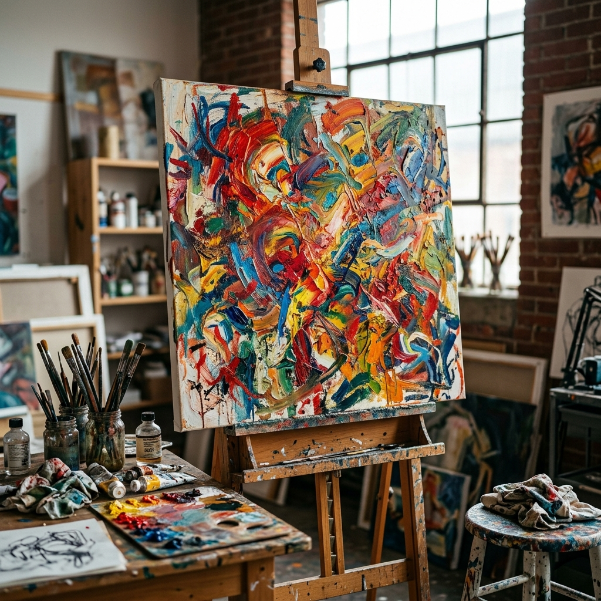

مَسعدة تبوّظ الافتتاح
الهدف: الإعلان الافتتاحي (Awareness) وصدمة كوميدية.

الزاوية: Medium Shot
سام تجلس بكامل أناقتها أمام لوحة بيضاء. تبتسم للكاميرا بثقة.

الزاوية: Close-Up (Jump Cut)
تقتحم مَسعدة الكادر تنظر لسام بصدمة.
الملاذ الآمن (ASMR)
الهدف: إظهار الاحترافية الفنية والراحة البصرية.

الزاوية: Extreme Close-Up
سكين رسم يخلط لونين ببطء شديد.
الزاوية: Over the Shoulder
سام ترسم بتركيز.
مَسعدة واللوحة التجريدية
الهدف: زيادة الـ Shares والتفاعل الكوميدي.
الزاوية: Medium Shot
سام تشرح بعمق عن لوحتها التجريدية.
الزاوية: Wide Shot
مَسعدة تنظر باشمئزاز للوحة.
المرحلة البشعة
الهدف: كسر المثالية وإظهار الجانب الإنساني والواقعي.
الزاوية: Close-up
سام تضع يدها على رأسها بإحباط أمام اللوحة.
سر الألوان بـ 50 جنيه
الهدف: محتوى مفيد جداً يتم حفظه بكثرة (High Saves).
الزاوية: Top-down View
سام تصور ألوان مائية رخيصة جداً وباليتة بلاستيكية بسيطة.
عقدة ارسميني ببلاش
الهدف: استهداف شريحة المصممين والرسامين كإعلان (Engagement).
الزاوية: Medium Shot
مَسعدة تبتسم بطمع وتمسك هاتفها لتري سام صورة لها.
ليه المشهد ده بيبكّيك؟
الهدف: إبراز الثقافة السينمائية والفنية لسام بطريقة جذابة.
الزاوية: Medium Close-up
سام تقف وفي الخلفية مشهد سينمائي درامي يُعرض.
هدية اللوحة الختامية
الهدف: إعلان قوي لزيادة المتابعين (Followers Campaign) عبر سحب على اللوحة.
الزاوية: Wide Shot
سام تعرض اللوحة الفنية الأجمل للشهر.
الزاوية: Two-shot
مَسعدة تحاول سحب اللوحة من سام.